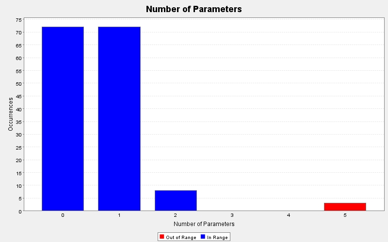

Produced by State Of Flow Eclipse Metrics on Sun Apr 14 20:24:37 EDT 2013
|  |
|
| CC | FE | LOCm | NLS | NOL | NOP | NOS | Line | Method | Type | Package |
|---|---|---|---|---|---|---|---|---|---|---|
| 2 | - | 19 | 0 | 2 | 1 | 9 | 19 | main(java.lang.String[]) | GUITest | test |
| 1 | - | - | 0 | 1 | 1 | 1 | 27 | paintComponent(java.awt.Graphics) | GUITest$(anonymous) | test |
| 3 | 0 | 13 | 0 | 3 | 1 | 8 | 72 | actionPerformed(java.awt.event.ActionEvent) | DialogTweets | view |
| 1 | 0 | 4 | 0 | 1 | 1 | 2 | 64 | paintComponent(java.awt.Graphics) | LoadingPanel | view |
| 1 | 0 | 17 | 0 | 1 | 1 | 21 | 47 | ProfilePanel(controller.TwitterController) | ProfilePanel | view |
| 3 | 0 | 23 | 1 | 2 | 1 | 24 | 65 | ProfilePanel(twitter4j.User) | ProfilePanel | view |
| 5 | 0 | 24 | 0 | 3 | 1 | 17 | 315 | actionPerformed(java.awt.event.ActionEvent) | ProfilePanel | view |
| 1 | 0 | 4 | 0 | 1 | 1 | 2 | 310 | paintComponent(java.awt.Graphics) | ProfilePanel | view |
| 1 | 0 | 4 | 0 | 1 | 1 | 1 | 295 | setFollowersCount(int) | ProfilePanel | view |
| 1 | 0 | 4 | 0 | 1 | 1 | 1 | 300 | setFollowingCount(int) | ProfilePanel | view |
| 1 | 0 | 4 | 0 | 1 | 1 | 1 | 305 | setTweetCount(int) | ProfilePanel | view |
| 1 | 2 | - | 0 | 1 | 1 | 6 | 93 | paintComponent(java.awt.Graphics) | ProfilePanel$(anonymous) | view |
| 38 | 0 | 200 | 0 | 6 | 1 | 150 | 1100 | actionPerformed(java.awt.event.ActionEvent) | TwitterGUI | view |
| 1 | 0 | 16 | 0 | 1 | 1 | 9 | 588 | displayUserProfile(twitter4j.User) | TwitterGUI | view |
| 1 | 0 | 2 | 0 | 1 | 1 | 0 | 1341 | keyPressed(java.awt.event.KeyEvent) | TwitterGUI | view |
| 1 | 0 | 2 | 0 | 1 | 1 | 0 | 1344 | keyReleased(java.awt.event.KeyEvent) | TwitterGUI | view |
| 8 | 0 | 30 | 0 | 3 | 1 | 26 | 1310 | keyTyped(java.awt.event.KeyEvent) | TwitterGUI | view |
| 1 | - | 7 | 0 | 1 | 1 | 0 | 261 | main(java.lang.String[]) | TwitterGUI | view |
| 3 | 0 | 17 | 0 | 2 | 1 | 16 | 1348 | mouseClicked(java.awt.event.MouseEvent) | TwitterGUI | view |
| 1 | 0 | 2 | 0 | 1 | 1 | 0 | 1366 | mouseEntered(java.awt.event.MouseEvent) | TwitterGUI | view |
| 1 | 0 | 2 | 0 | 1 | 1 | 0 | 1369 | mouseExited(java.awt.event.MouseEvent) | TwitterGUI | view |
| 1 | 0 | 2 | 0 | 1 | 1 | 0 | 1372 | mousePressed(java.awt.event.MouseEvent) | TwitterGUI | view |
| 1 | 0 | 2 | 0 | 1 | 1 | 0 | 1375 | mouseReleased(java.awt.event.MouseEvent) | TwitterGUI | view |
| 3 | 2 | - | 0 | 3 | 1 | 9 | 339 | actionPerformed(java.awt.event.ActionEvent) | TwitterGUI$(anonymous) | view |
| 4 | 0 | - | 1 | 3 | 1 | 10 | 353 | actionPerformed(java.awt.event.ActionEvent) | TwitterGUI$(anonymous) | view |
| 1 | 1 | - | 0 | 1 | 1 | 1 | 397 | paintComponent(java.awt.Graphics) | TwitterGUI$(anonymous) | view |
| 1 | 1 | - | 0 | 1 | 1 | 1 | 491 | paintComponent(java.awt.Graphics) | TwitterGUI$(anonymous) | view |
| 1 | 1 | - | 0 | 1 | 1 | 1 | 610 | paintComponent(java.awt.Graphics) | TwitterGUI$(anonymous) | view |
| 1 | 1 | - | 0 | 1 | 1 | 1 | 743 | paintComponent(java.awt.Graphics) | TwitterGUI$(anonymous) | view |
| 1 | 1 | - | 0 | 1 | 1 | 1 | 802 | paintComponent(java.awt.Graphics) | TwitterGUI$(anonymous) | view |
| 1 | 0 | - | 0 | 1 | 1 | 4 | 842 | mouseClicked(java.awt.event.MouseEvent) | TwitterGUI$(anonymous) | view |
| 1 | 5 | - | 0 | 1 | 1 | 46 | 848 | viewMessage(int) | TwitterGUI$(anonymous) | view |
| 1 | 1 | - | 0 | 1 | 1 | 1 | 941 | paintComponent(java.awt.Graphics) | TwitterGUI$(anonymous) | view |
| 3 | 0 | 24 | 3 | 3 | 0 | 16 | 73 | TwitterController() | TwitterController | controller |
| 2 | 0 | 18 | 4 | 2 | 0 | 9 | 395 | getAccessToken() | TwitterController | controller |
| 2 | 0 | 18 | 4 | 2 | 0 | 9 | 414 | getAccessTokenSecret() | TwitterController | controller |
| 1 | 0 | 7 | 0 | 1 | 0 | 2 | 325 | getAllMessages() | TwitterController | controller |
| 1 | 0 | 8 | 0 | 1 | 0 | 2 | 316 | getAuthUrl() | TwitterController | controller |
| 1 | 0 | 8 | 0 | 1 | 0 | 3 | 188 | getBackgroundImage() | TwitterController | controller |
| 1 | 0 | 7 | 0 | 1 | 0 | 2 | 353 | getCurrentUserID() | TwitterController | controller |
| 1 | 0 | 7 | 0 | 1 | 0 | 2 | 123 | getDescription() | TwitterController | controller |
| 1 | 0 | 7 | 0 | 1 | 0 | 2 | 98 | getDisplayName() | TwitterController | controller |
| 1 | 0 | 7 | 0 | 1 | 0 | 2 | 240 | getFollowers() | TwitterController | controller |
| 1 | 0 | 7 | 0 | 1 | 0 | 2 | 274 | getFollowersCount() | TwitterController | controller |
| 1 | 0 | 7 | 0 | 1 | 0 | 2 | 248 | getFollowing() | TwitterController | controller |
| 1 | 0 | 7 | 0 | 1 | 0 | 2 | 232 | getFriendsCount() | TwitterController | controller |
| 1 | 0 | 7 | 0 | 1 | 0 | 2 | 224 | getFriendsIDs() | TwitterController | controller |
| 1 | 0 | 7 | 0 | 1 | 0 | 2 | 300 | getHomeTimeline() | TwitterController | controller |
| 1 | 0 | 7 | 0 | 1 | 0 | 1 | 433 | getIsSetUp() | TwitterController | controller |
| 1 | 0 | 7 | 0 | 1 | 0 | 2 | 139 | getLocation() | TwitterController | controller |
Produced by State Of Flow Eclipse Metrics on Sun Apr 14 20:24:37 EDT 2013